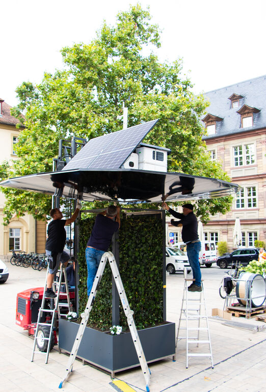

Smarte Region Würzburg
"Klimarondell"
Überblick über das Klimarondell-Projekt
Das Projekt “Klimarondell” ist eine Kooperation im Rahmen der Maßnahme Heimatforum der “Smarten Region Würzburg” und dem Unternehmen “greenovacity”. Ziel ist es, mit smarten Technologien die Lebensqualität während der Sommerhitze zu steigern. Ein Ansatzpunkt dabei ist der greenovaTree, ein Produkt des Start-Ups aus Baden-Württemberg. Nach Angaben des Herstellers soll dieser als “Oase in der Stadt” dienen und urbane Räume in kühle Rückzugsorte verwandeln.
Smarte Region Würzburg testet ein Klimarondell
Der greenovaTree, ein multifunktionales “Klimarondell”, wurde als Prototyp im September 2023 im Ehrenhof des Rathauses platziert. Er diente während eines mehrwöchigen Testzeitraums als experimenteller Begegnungsort. Das Gerät ist darauf ausgerichtet, Schatten zu spenden, die Luftfeuchtigkeit zu steigern, die Luftqualität zu verbessern, die Umgebungstemperatur zu senken und Energie zu generieren. Mit seinem schattenspendenden Runddach, pflanzenberankten Wänden, Sitzgelegenheiten und integrierter Kühltechnik soll untersucht werden, inwiefern diese Konstruktion zur Verbesserung des Mikroklimas auf versiegelten Flächen beitragen kann.
Im Rahmen des Testzeitraums bot das Projekt “Klimarondell” den Bürgerinnen und Bürgern die Möglichkeit, die innovative Anlage im Rathausinnenhof auf einer Fläche von etwa 1400 m² zu nutzen und ihre Eindrücke zu sammeln. Trotz der Herausforderung, dass über 90% des Ortes mit undurchlässigen Materialien bedeckt sind und die Bepflanzung mit Bäumen aufgrund eines darunterliegenden Parkplatzes nicht möglich ist, stellt der zentral gelegene und fußgängerfreundliche Innenhof einen wichtigen Ort im städtischen Gefüge dar. Die gesammelten Rückmeldungen aus der Bevölkerung sowie von Fachleuten werden in einer umfassenden Bewertung berücksichtigt, die darüber entscheidet, ob ähnliche Installationen zukünftig auch in anderen Stadtteilen und Gemeinden des Landkreises umgesetzt werden, um die Lebensqualität in urbanen Räumen während der Sommermonate zu verbessern.

Der urbane Wärmeinsel-Effekt
Steigende Temperaturen in städtischen Bereichen, die durch den Urban Heat Island-Effekt (UHI) verstärkt werden, rücken zunehmend in den Fokus der Stadtbewohner und Planer. Der UHI ist größtenteils auf menschliche Aktivitäten zurückzuführen: Wärme wird in Bauwerken aus Beton und Asphalt gespeichert, die Abwärme von Gebäuden und Verkehr trägt zur Aufheizung bei, und die urbane Struktur limitiert natürliche Luftströmungen (Oke, 1982; Vujovic et al., 2021).
Ein fundiertes Verständnis der Hitzeentwicklung in städtischen Gebieten ist für die Bewertung von städtischen Risiken von Bedeutung, da städtische Hitze wesentliche Auswirkungen auf die öffentliche Gesundheit, den Energieverbrauch und die Umweltqualität hat. Zudem kann eine erhöhte Hitzebelastung gesundheitliche Beschwerden verstärken, insbesondere bei vulnerablen Bevölkerungsgruppen. Studien haben gezeigt, dass eine präzise Erfassung und Analyse städtischer Hitzebelastungen dazu beitragen kann, diese Risiken zu minimieren und dadurch die Lebensqualität sowie die Energieeffizienz in urbanen Räumen zu fördern (Heaviside et al., 2017; Sarrat et al., 2006; Yin et al., 2023; Reid et al., 2009).”
Die Geschichte der Daten
Temperaturdaten der Stadt
Die hier dargestellten Daten stammen vom Deutschen Wetterdienst (DWD). Der DWD ist die nationale meteorologische Dienststelle Deutschlands, die umfassende Wetter- und Klimainformationen für die Öffentlichkeit und spezifische Sektoren wie Verkehr, Landwirtschaft und Katastrophenschutz bereitstellt. Der DWD betreibt ein umfangreiches Netzwerk von Wetterstationen im ganzen Land, um präzise und aktuelle Daten zu sammeln. In Würzburg, einer Stadt in Bayern, ist eine solche Wetterstation in Betrieb. Die hier analysierten Daten stammen von dieser Station und bieten Einblicke in die lokalen Temperaturverhältnisse.
Die zur Verfügung gestellten Temperaturdaten des Deutschen Wetterdienstes (DWD) für Würzburg im Zeitraum vom 22. August 2023 bis zum 16. September 2023 bieten einen umfassenden Einblick in die lokalen klimatischen Bedingungen, während gleichzeitig das Klimarondell in der Stadt aufgebaut war. Diese Konstellation ermöglicht eine einzigartige Perspektive auf die urbanen Temperaturverhältnisse.
Die Wetterstation des DWD befindet sich auf einem Hügel am Rande der Stadt und liefert somit Daten, die weniger direkt von den urbanen Wärmeinsel-Effekten beeinflusst sind, welche in den zentraleren, dicht bebauten Stadtteilen auftreten können. Die durchschnittliche Temperatur in diesem Zeitraum lag bei etwa 19.55°C, mit Schwankungen zwischen 9.7°C und 31.1°C. Der Höchstwert von 31.1°C wurde am 24. August um 14:00 Uhr verzeichnet.
Die Temperaturdaten aus Würzburg zeigen im Zeitraum vom 22. August bis 16. September 2023 deutliche Schwankungen, die auf natürliche Wettervariationen zurückzuführen sind. Diese Schwankungen müssen in weiteren Analysen, insbesondere bei der Untersuchung des Einflusses des Klimarondells, berücksichtigt werden, um präzise Schlussfolgerungen ziehen zu können.
Interaktive Visualisierung der gemessenen Daten
Im Zeitraum vom 23. August 2023 bis zum 7. Oktober 2023 erlebte die Region eine vielfältige Palette klimatischer Bedingungen, wie durch die Schwankungen in den gemessenen Temperatur-, Luftfeuchtigkeits- und Bodenfeuchtigkeitswerten ersichtlich wird. Die Lufttemperaturen schwankten beträchtlich, mit Werten zwischen 7.62 °C und 34.80 °C, was auf den Übergang zwischen den Jahreszeiten oder auf kurzfristige Wetteränderungen hindeuten könnte. Im Durchschnitt lagen die Temperaturen bei etwa 18.48 °C, was auf gemäßigte Bedingungen hinweist, jedoch mit signifikanten täglichen und nächtlichen Temperaturschwankungen.
Die Luftfeuchtigkeit zeigte ebenfalls eine breite Streuung, wobei die Werte am Auslass durchschnittlich bei 79.93% lagen und am Einlass bei 65.01%. Diese Unterschiede könnten auf lokale klimatische oder umgebungsbedingte Faktoren zurückzuführen sein.
Die Bodenfeuchtigkeit variierte im Laufe des Zeitraums und lag im Durchschnitt bei 7.86, was auf wechselnde Bedingungen für Pflanzenwachstum und Bodengesundheit hindeutet.
Insgesamt zeigen die Daten eine dynamische klimatische Periode mit einer Vielzahl von Bedingungen, die sowohl Herausforderungen als auch Möglichkeiten für die allgemeine Lebensqualität in der Region darstellen könnten. Eine sorgfältige Analyse und Überwachung dieser klimatischen Variablen ist entscheidend, um Anpassungsstrategien zu entwickeln und die langfristige Nachhaltigkeit der Region zu gewährleisten.
Earth Observation: Satellitendaten in der Analyse
UrbanSens hat in einer innovativen Analyse Satellitendaten der Copernicus-Serie der Europäischen Weltraumorganisation (ESA) sowie der Landsat 8 und Landsat 9 Satelliten der NASA genutzt, um die Landoberflächentemperatur in einem spezifischen Gebiet zu untersuchen. Diese Technologie, auch als Earth Observation (EO) bekannt, ermöglicht präzise Messungen und Beobachtungen der Erdoberfläche aus dem Weltraum.
Die Copernicus- und Landsat-Satelliten tragen eine Vielzahl von Instrumenten, die in der Lage sind, verschiedene Arten von Daten zu sammeln, einschließlich der Temperatur der Landoberfläche anhand Ihrer Emissivitäts Werte. Diese Daten sind entscheidend, um Veränderungen in unserer Umwelt zu überwachen und zu verstehen. Die Pixel in den Satellitenbildern repräsentieren spezifische Bereiche auf der Erdoberfläche, und jede Änderung in ihrer Helligkeit oder Farbe kann auf eine Veränderung in den Umweltbedingungen hindeuten.

Die Landsat-Satelliten sind mit spezialisierten Sensoren ausgestattet, die auf eine Reihe von thermischen Wellenlängen/thermischer Infrarotstrahlung empfindlich sind. Sie messen nicht die Lufttemperatur, sondern die thermischen Eigenschaften der Erdoberfläche selbst, insbesondere die Emissivität – die Effizienz, mit der ein Material thermische Energie ausstrahlt.
Zusätzlich ermöglichte die Sentinel-2-Kollektion der ESA eine Verbesserung der Auflösung unserer Daten. UrbanSens hat einen Downscaling-Algorithmus verwendet, der auf den unterschiedlichen Abstrahleigenschaften von Landbedeckungsklassen basiert, um eine höhere Auflösung zu erzielen. Durch den Vergleich der Satellitendaten vor und nach der Installation des Klimarondells konnten wir feststellen, ob es eine spürbare Veränderung in der Landoberflächentemperatur gegeben hat. Dies ermöglichte es uns, die Effektivität des Klimarondells bei der Beeinflussung der lokalen Temperaturbedingungen zu bewerten.
Fazit und Ausblick
Open Data bildet das Fundament für eine transparente und gemeinschaftliche Gestaltung von Klimaanpassungsstrategien. Der offene Zugriff auf klimabezogene Daten ermöglicht es, Maßnahmen präzise auf die Bedürfnisse lokaler Gemeinden abzustimmen. Hyperlokale Daten vertiefen unser Verständnis für spezifische Herausforderungen, während Satellitendaten mit ihrer hohen zeitlichen Auflösung die kontinuierliche Beobachtung klimatischer Veränderungen erlauben. Diese Kombination bietet eine dynamische Grundlage, um Anpassungsstrategien regelmäßig zu überprüfen und zu optimieren. Dadurch können wir effektiver auf lokale klimatische Veränderungen eingehen, was die Wirksamkeit von Klimaanpassungsmaßnahmen steigert und zugleich die Widerstandsfähigkeit und Lebensqualität der Menschen in den betroffenen Gemeinden verbessert.
References
Heaviside, C., Macintyre, H. & Vardoulakis, S. The Urban Heat Island: Implications for Health in a Changing Environment. Curr Envir Health Rpt 4, 296–305 (2017). https://doi.org/10.1007/s40572-017-0150-3
Oke, T. R. (1982). The energetic basis of the urban heat island. Quarterly journal of the royal meteorological society, 108(455), 1-24.
Reid, C. E., O’Neill, M. S., Gronlund, C. J., Brines, S. J., Brown, D. G., Diez-Roux, A. V., & Schwartz, J. (2009). Mapping Community Determinants of Heat Vulnerability. Environmental Health Perspectives, 117(11), 1730–1736. https://doi.org/10.1289/ehp.0900683
Sarrat, C., Lemonsu, A., Masson, V., & Guedalia, D. (2006). Impact of urban heat island on regional atmospheric pollution. Atmospheric Environment, 40(10), 1743–1758. https://doi.org/10.1016/j.atmosenv.2005.11.037
Vujovic, S., Haddad, B., Karaky, H., Sebaibi, N., & Boutouil, M. (2021). Urban Heat Island: Causes, Consequences, and Mitigation Measures with Emphasis on Reflective and Permeable Pavements. CivilEng, 2(2), 459–484. https://doi.org/10.3390/civileng2020026